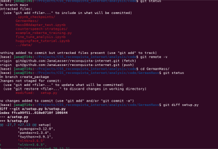
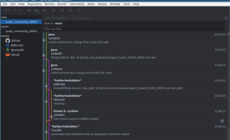

Module 2: Digitalisation in Research
Version control with Git and GitHub
Jana Lasser
TU Graz & CSH Vienna
2021-11-25
Why should you be interested in Git & GitHub?*
Works with any type of file – not just code!
Gives you full control over versioning and merging.
Gives you a free remote backup of your work on GitHub.
Lets you easily share your work with collaborators and the world.
Makes your work findable through indexing by google.
Makes your work citable through DOIs assigned by Zenodo.
*GitLab works just as well and is an anternative that can be hosted by institutions.
How does it work (very broadly)?

Examples of GitHub repositories for researchers
But, how do I actually do this?
There are two major ways to interface with Git:
The command line interface (CLI) [we are not going to use this] 
But, how do I actually do this?
There are two major ways to interface with Git:
The graphical user interface (GUI) [this is what we are going to do] 
There is a large number of GUI options for different platforms.
Here we use GitAhead because it works for Windows, Mac and Linux and is free.
Who has a GitHub/GitLab account?
Who managed to get GitAhead up and running?
Who successfully linked GitAhead to their GitHub/GitLab account?
Let's do this together!
A (very short) workflow with Git, GitHub and GitAhead
(1) Making a new remote repository
(2) Linking GitHub and GitAhead
(3) Linking a remote repository to a local repository
(4) Locally committing new files and changes
(5) Pushing changes to the remote repository
Want to learn more? The internet is your friend!